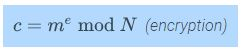
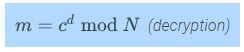

Important terms:
Encrypt: the process of transforming information or data into a code to prevent unauthorized access.
Decrypt: the process of transforming data that has been rendered unreadable through encryption back to its unencrypted form.
Cyphertext: an encrypted message.
Plaintext: an unencrypted message.
Key: an unpredictable (typically large and random) string of numbers to decrypt an encrypted message.
Symmetric Key Cryptosystem - Uses the same key to decrypt and encrypt the message.
| Encrypt | Decrypt |
|---|---|
| m = message k = key 1 N = key 2 c = cyphertext |
RSA encryption uses a public key for encryption and a private key for decryption. It's based on very large numbers (hundreds of digits)
Preparation of public and private keys in RSA

